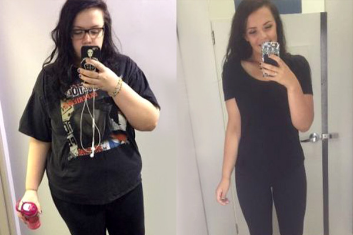

Antes e Depois Surpreendente!
Esta é Sophie Wagner, uma renomada pesquisadora alemã, especialista em nutrição e metabolismo.
Em apenas 30 dias, ela conseguiu eliminar 39 kg, sem precisar recorrer a dietas restritivas ou exercícios exaustivos.
Durante seus estudos para o doutorado em ciência dos alimentos, Sophie fez uma descoberta revolucionária: um novo método capaz de bloquear a absorção de gordura — algo nunca antes visto na área da nutrição.
Para garantir que os resultados não eram apenas um acaso, ela convidou sua irmã, Emma Wagner, para testar o método. O que aconteceu a seguir foi impressionante…
Emma perdeu 25 kg em apenas 30 dias!
Animada com os resultados, a amiga de Sophie, Clara, de sua cidade natal, também decidiu testar esse novo método inovador de bloqueio de gordura – e os resultados foram surpreendentes!
Clara eliminou 33 kg em apenas 2 meses!
Empolgada com a eficácia do método, um dos voluntários da pesquisa de doutorado de Sophie, Lucas, também decidiu testar – e os resultados foram impressionantes!
Lucas perdeu incríveis 57 kg em menos de 3 meses com a ajuda de Sophie!
A transformação foi tão impressionante que até especialistas e pesquisadores renomados ficaram surpresos com a eficácia do método desenvolvido por ela.
No palco, diante de uma plateia repleta de especialistas, Sophie declarou com confiança:
“Posso garantir que qualquer pessoa pode ter resultados semelhantes. Se você tem dificuldade para perder peso… também pode eliminar 22 kg em apenas 30 dias. Sem dietas rígidas ou treinos exaustivos. Tudo graças a esta ferramenta inovadora.”
Seus colegas e professores ficaram perplexos. Parecia bom demais para ser verdade.
Mas Sophie provou que eles estavam errados.
Agora, vamos revelar em detalhes a ferramenta revolucionária que Sophie desenvolveu e que está transformando vidas!
Como Sophie Fez Essa Descoberta
Sophie encontrou essa solução revolucionária para emagrecimento durante seu segundo ano de doutorado em ciências da nutrição e metabolismo na Universidade de Berlim.
A carga intensa de estudos e a rotina estressante não permitiam que ela seguisse uma alimentação equilibrada, e, como resultado, ganhou mais de 21 kg no primeiro ano. Como pesquisadora da área, ela se sentia frustrada e até envergonhada, mas simplesmente não tinha tempo para academia ou dietas complicadas.
Além dos problemas com o peso, sua vida pessoal também começou a desmoronar…

Um dia, enquanto buscava materiais para sua pesquisa no departamento de livros raros da biblioteca da universidade, Sophie se deparou com um estudo antigo que mudaria tudo…
Enquanto folheava um livro antigo e esquecido, Sophie encontrou uma pesquisa intrigante intitulada: "Método de Bloqueio de Gordura – Experimento 35/10".
Aquilo chamou sua atenção imediatamente. Seria possível impedir que o corpo absorvesse gordura sem dietas ou exercícios?
Um Novo Método Para Bloquear a Gordura
Olhando para si mesma no espelho, Sophie sabia que precisava agir. Ela decidiu testar o método descrito no livro para criar uma fórmula capaz de bloquear a absorção de gordura.
Inicialmente, tentou reproduzir o experimento em casa, misturando ingredientes como sais, álcalis e ácidos naturais, como vinagre e ácido cítrico. Mas sem os equipamentos adequados, os resultados foram fracos e o processo muito caro.
Mesmo assim, ela percebeu que estava no caminho certo – e aquele método tinha um potencial enorme.
Felizmente, Sophie conseguiu acesso ao laboratório de nutrição da Universidade de Berlim, onde finalmente pôde testar e aperfeiçoar a fórmula. Foi aí que tudo mudou!
O método de bloqueio de gordura era surpreendentemente simples, e o laboratório tinha todos os ingredientes necessários para que Sophie pudesse recriar a fórmula.
Foram meses de testes, ajustes e tentativas frustradas…
Até que, finalmente, ela encontrou a combinação perfeita de ingredientes!
Agora, faltava a parte mais importante: testar o método na prática.
Sophie decidiu ser sua própria cobaia.
O resultado foi chocante: em apenas 7 dias, ela eliminou 6 kg!
Em 15 dias, foram mais 7,5kg

Em 28 dias, foram mais 3,5 kg
E finalmente, após 41 dias, Sophia perdeu mais 5 kg.
Isso dá 22kg, impressionante!
Qual o segredo desse método para bloquear gordura?
Nosso corpo possui hormônios-chave chamados leptinas, que controlam o apetite e definem como acumulamos gordura.
Mas o estilo de vida atual desequilibra esses hormônios, causando fome constante e metabolismo desacelerado, levando ao ganho de peso sem razão aparente.
Este método restaura o equilíbrio das leptinas, acelerando o metabolismo e fazendo o cérebro entender rapidamente que você está saciado, estimulando a queima natural da gordura acumulada.
Durante minhas pesquisas, encontrei estudos pioneiros da década de 1980 sobre métodos inovadores contra o acúmulo de gordura. Um paciente chegou a perder 37 kg em apenas 47 dias.
Na época, os resultados foram tão surpreendentes que a comunidade científica reagiu com medo e ceticismo, decidindo ocultar e abandonar os experimentos por receio das consequências.
Hoje, finalmente, esse método está disponível, permitindo que você também bloqueie a gordura corporal e conquiste uma perda expressiva de peso em poucas semanas.
Você sente que tem o metabolismo lento ou passou a vida toda brigando contra a balança?
Relaxe. Isso tem solução.
Não importa se seu metabolismo é naturalmente devagar, se já tentou dezenas de dietas sem resultado, ou se apenas quer eliminar peso rápido antes de uma data especial que está chegando.
Este novo método de bloqueio de gordura resolverá tudo isso rapidamente.
Foi exatamente o que aconteceu com Marcos Pereira, de 57 anos.
Ele lutou contra o excesso de peso desde jovem, até descobrir nosso método. Agora pode comer praticamente tudo o que gosta, sem engordar.
E mais: conquistou um corpo saudável e equilibrado.
Marcos saiu dos 98 kg para incríveis 77 kg em apenas 30 dias. Veja como:
Foi o que aconteceu também com a Cristina, de 54 anos, que decidiu emagrecer para o casamento do filho.
Em apenas 5 semanas, ela eliminou 13 kg e apareceu radiante nas fotos desse momento especial.
E há também o caso do Ricardo Almeida, 52 anos, que começou a ganhar peso depois dos 35.
Parece difícil acreditar, mas ao usar nosso método de bloqueio de gordura, ele voltou a vestir roupas que não serviam há quase duas décadas!
Imagine voltar a vestir aquela roupa favorita que ficou guardada no armário por anos. Imagine também como seria sair bem e mais jovem em todas as fotos novas.
Esse novo método para bloquear gordura é capaz de realizar todos os seus objetivos de emagrecimento de forma simples e natural.
O excesso de peso não é culpa sua.
Fernanda sempre se questionou por que seu médico insistia em tratamentos caros e com efeitos colaterais perigosos.
Mas quando ela decidiu pesquisar por conta própria, descobriu algo chocante:
Grandes empresas farmacêuticas e profissionais da saúde escondem métodos eficazes porque lucram muito mais vendendo soluções temporárias em vez de curas reais e permanentes.
Mas agora, você pode parar de buscar soluções temporárias.
Este é o último método de emagrecimento que você precisará usar na vida.
Sem suplementos, dietas malucas ou rotinas de exercício exaustivas.
Por quê?
Porque quando Fernanda descobriu esse método inovador contra o acúmulo de gordura, precisou encontrar uma forma prática de integrá-lo ao cotidiano das pessoas.
Sua pesquisa levou à identificação de um ingrediente secreto e altamente eficaz.
Agora, esse método exclusivo está finalmente acessível ao público.
E pode fazer você eliminar até 19 kg em apenas 30 dias!
97% dos voluntários que perderam peso de forma consistente
- - Dietas Tradicionais
- - Ingrediente Secreto
| 13% |
| 97% |
E o melhor: os resultados não são passageiros.
Mas talvez você esteja se perguntando...
...por que nunca viu essa solução nas farmácias? É porque Fernanda desenvolveu recentemente essa fórmula exclusiva. Por isso seu médico provavelmente ainda não conhece o composto.
Agora é o momento ideal para testar este método.
Sophia e sua equipe acabam de preparar os primeiros lotes dessa fórmula inovadora.
E é exatamente agora, enquanto ainda fresca, que ela oferece maior potência e resultados mais rápidos na eliminação da gordura corporal.
Média de kg perdidos após 1 mês
- - Lotes mais antigos
- - Lotes Frescos
| 11 Kilos |
| 48 Kilos |
Segundo estudos recentes, os participantes tiveram resultados mais expressivos na perda de peso entre setembro e outubro, comparados aos demais meses do ano.
Perda média de peso por mês
- - Outros meses do ano
- - Setembro, Outubro
| 11 kg |
| 22 kg |
Mas você precisa ser rápido, os estoques estão acabando…
Agora imagine garantir seu pote antes que o lote atual acabe.
Você poderá finalmente usar aquela calça que estava esquecida no armário há anos.
Vai poder comer sem medo novamente, sem passar o dia todo preocupado com a balança.
Mais magro, mais saudável e muito mais feliz.
Mas por que Sophia decidiu produzir esse composto revolucionário?
Ela quer que mais pessoas tenham o mesmo sucesso que teve.
Sua missão como especialista em nutrição sempre foi ajudar pessoas comuns a emagrecerem com saúde, de forma definitiva e sem sofrimento.
Ela precisava criar algo que fosse eficaz para o resto da vida.
Em breve, você também verá esses resultados incríveis de emagrecimento—algo jamais visto antes.
Sem restrições alimentares severas.
Sem exercícios obrigatórios.
Imagine olhar no espelho e se ver mais magro, saudável e confiante.
Que ingrediente poderoso é esse?
O ingrediente secreto é o Arthrospira platensis, conhecido popularmente como Espirulina presente em Slimsy.
Ele ativa no seu cérebro sinais poderosos que bloqueiam o acúmulo de gordura corporal.
Esses sinais avisam ao corpo que você já está plenamente satisfeito, prevenindo naturalmente novos depósitos de gordura.
A Laranja Moro não apenas evita o ganho de peso, mas também induz rapidamente seu organismo à cetose, transformando seu corpo em uma verdadeira máquina de queimar gordura, dia após dia.
E o melhor de tudo?
Você não precisa seguir dietas rigorosas ou praticar exercícios para alcançar ótimos resultados.
Veja o teste realizado com duas voluntárias:
Fernanda comparou uma mulher que seguiu uma dieta convencional durante um mês com outra que utilizou o método da Espirulina.
A mulher que seguiu a dieta tradicional perdeu cerca de 6 kg no período:
Já a voluntária que utilizou o método da Espirulina NÃO fez dietas nem exercícios físicos...
...e ainda assim eliminou incríveis 17 kg em apenas 30 dias:
Esse foi o único especialista que reconheceu Sophia:
“Esse ingrediente descoberto por Sophia é realmente revolucionário. Fácil de utilizar e sem efeitos colaterais, garante um emagrecimento acelerado sem dietas difíceis ou exercícios exaustivos. Recomendo fortemente.”
Diga adeus aos exercícios desgastantes e dietas complicadas...
...e dê boas-vindas a uma forma simples e prazerosa de emagrecer.
Mas você talvez esteja se perguntando como incluir isso na rotina diária.
É muito simples!
Porque...
Esta é a maneira mais fácil de perder peso que existe!
Basta utilizar 12 gotas desse composto, apenas uma vez por dia, para eliminar até 19 kg em apenas 28 dias.
Sem necessidade de dietas, exercícios físicos ou contagem de calorias.
Parece difícil acreditar?
Veja como Sabrina conseguiu perder 14 kg em apenas 27 dias:
Ela mesma contou:
"Eu nem acreditei! Sophia e sua equipe disseram que não era necessário dieta ou exercício—bastava usar o composto diariamente pela manhã. Foi a primeira vez que consegui perder 14 kg sem esforço em menos de um mês."
E agora veja também os resultados que o André alcançou em apenas 29 dias:
André compartilhou:
"Nunca gostei de cardio ou qualquer exercício físico. Mas a Sophia recomendou apenas seguir as instruções simples e tomar o Slimsy diariamente. Após 29 dias, eu já tinha perdido 18 kg, mesmo comendo pizza todo final de semana. Muito obrigado, Sophia!"
Veja também esta comparação entre pessoas que seguiram dietas e exercícios tradicionais e aquelas que utilizaram o Slimsy:
Perda média de peso – Dietas e exercícios vs. Usuários de Slimsy
- - Dieta e exercícios
- - Usuários de Slimsy
| 10% |
| 92% |
Imagine aproveitar suas comidas preferidas sem culpa e conquistar seu corpo dos sonhos sem precisar frequentar a academia.
Poder usar biquíni ou sunga na praia com total confiança, sabendo que você está na melhor forma de sua vida.
Nunca foi tão simples e rápido perder peso!
Mas será que existe risco de recuperar o peso perdido?
Fique tranquilo: o peso perdido não volta mais.
Veja o exemplo de Amanda, que passou a vida toda brigando com a balança, tentando todo tipo de dieta e exercício sem resultados duradouros.
Mas quando Amanda testou o método da Sophia com o Slimsy, ela perdeu 11 kg em apenas 26 dias—sem esforço algum e sem recuperar o peso novamente:
E mesmo após 6 meses, Amanda continua mantendo seu novo corpo leve, saudável e definido.
Outra voluntária, chamada Diane, também compartilhou seus resultados após 6 meses usando o método criado por Sophia:
"Depois de perder 13 kg em apenas 30 dias com o Slimsy, consegui manter meu peso ideal e minha aparência por mais de seis meses. Estou muito satisfeita e feliz com meu novo corpo!"
Veja abaixo o incrível progresso de Diane:
Você provavelmente está se perguntando:
O Slimsy é seguro?
Sim, o Slimsy é extremamente seguro. É um ingrediente natural, amplamente estudado e cuidadosamente selecionado por Sophia durante suas pesquisas.
Não possui efeitos colaterais, garantindo um emagrecimento saudável e confiável.
% que tiveram efeitos colaterais
- - Usuários tradicionais de outros métodos de emagrecimento
- - Usuários de Slimsy
| 72% |
| 0% |
Enquanto 72% das pessoas que utilizaram métodos tradicionais de emagrecimento relataram efeitos colaterais, nenhum participante que testou o Slimsy teve qualquer reação adversa.
Confira agora o que alguns desses participantes disseram sobre sua experiência:
"Eu estava desconfiado sobre o Slimsy, pois métodos tradicionais
sempre me deixaram frustrado e sem resultados reais. Mas dessa vez
meu corpo respondeu rapidamente: perdi mais de 11 kg em apenas um
mês."
— Roberto Mendes

"O Slimsy foi incrível! Consegui perder 9 kg sem nenhum efeito
colateral."
— Juliana Costa
Então, se você ainda tem dúvidas sobre esse composto, pode ficar tranquilo.
Imagine quantos quilos você conseguirá perder sem esforço algum.
Agora, a pergunta mais importante é...
Como conseguir esse ingrediente revolucionário?
Você está no lugar certo e na hora certa!
Após aprovação definitiva de sua equipe e investidores, Sophia finalmente está liberando o composto Slimsy para o público geral.
Cada pote do Slimsy contém a concentração exata do ingrediente ativo para resultados eficazes.
A equipe liderada por Sophia investiu anos de pesquisa e milhões para desenvolver uma fórmula poderosa como essa.
Agora, o Slimsy poderia facilmente custar centenas de reais por pote — mas você terá uma condição especial hoje.
O que as pessoas estão dizendo sobre o Slimsy?
"Quando ouvi falar dos resultados dos testes feitos pela
Sophia, fiquei desconfiada, parecia bom demais pra ser verdade.
Mas decidi tentar e, em apenas 23 dias, perdi 6 kg. Que
descoberta maravilhosa!"
– Ana Cláudia Lima
"Quando ouvi falar dos resultados dos testes feitos pela
Sophia, fiquei desconfiada, parecia bom demais pra ser verdade.
Mas decidi tentar e, em apenas 23 dias, perdi 6 kg. Que
descoberta maravilhosa!"
– Fernanda Cardoso
"Passei a vida inteira lutando contra o excesso de peso. Dietas e exercícios nunca funcionaram. Mas agora, tomando apenas 12 gotas do Slimsy pela manhã, consegui perder 7 kg em 25 dias. Muito obrigado, Sophia!"
– Thiago Oliveira
"Quando uma amiga me recomendou o Slimsy, achei estranho ela dizer que não precisava fazer dieta ou exercício. Mas em 30 dias eu perdi incríveis 11 kg. Ainda estou surpresa com os resultados."
– Júlia Martins
"Eu perdi 8 kg no primeiro mês usando o Slimsy, justamente quando parei de me exercitar. É impressionante, recomendo a todos!"
– Patrícia Ribeiro
Sophia se dedicou intensamente a essa pesquisa porque realmente se importa com você.
Ela sabe o quanto é difícil enfrentar o excesso de peso.
Agora que descobriu a fórmula perfeita para emagrecer rapidamente, Sophia quer disponibilizar o Slimsy para o máximo possível de pessoas.
Claro, os investidores não ficaram muito felizes com essa decisão, mas Sophia está determinada a ajudar pessoas comuns a terem os mesmos resultados que ela teve...
...assim como ela conseguiu perder 19 kg em apenas 28 dias.
Por isso, em vez de cobrar R$300,00 por cada pote do Slimsy, Sophia decidiu oferecer, por tempo limitado, um desconto exclusivo para você experimentar essa transformação.
Agora, se ainda estiver com dúvidas...
O que você tem a perder?
Você tem duas opções claras:
Opção nº 1: você decide que o Slimsy não é para você.
Nesse caso, pode simplesmente sair desta página e continuar como está agora, mantendo o mesmo peso e só imaginando como seria ter o corpo dos seus sonhos.
E tudo bem se preferir isso.
Ou... opção nº 2: você pode tomar uma atitude agora, garantir seu pote do Slimsy e finalmente perder até 19 kg em 28 dias.
A escolha está nas suas mãos!
Se você está realmente pronto para perder peso, clique no botão abaixo e comece hoje sua jornada com Slimsy!
(APLIQUE O SEU DESCONTO AGORA ANTES QUE TUDO ACABE)
Nota: Elizabeth e seus pacientes usaram Slimsy e perderam muito peso.

Atualização de estoque: QUASE ESGOTADO. Desconto MÁXIMO disponível somente até: , de de 2025
LIMITE DISPONÍVEL de desconto até: , de de 2025
Garanta sua OFERTA EXCLUSIVA e ganhe frete grátis!